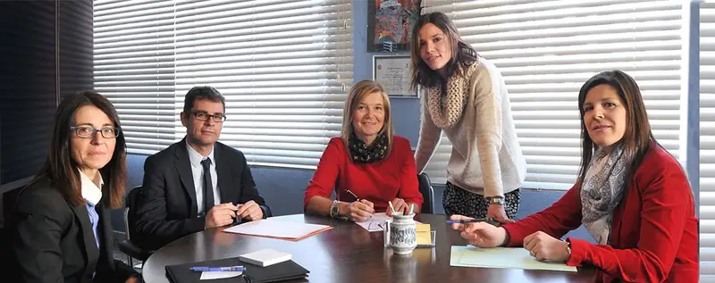

Mylène Marcet Pierre
Roser Raurich Marcet
Laia Andrevi Balaguer
Sergi Escorihuela Busqueta
Rosario Raposo Martínez
Terrassa
Carretera de Castellar, 486, 1ª · 08227 Terrassa
Barcelona
Avinguda Diagonal, 449, 4º · 08036 Barcelona
Madrid
Paseo de las Acacias, 15, 4ºB · 28005 Madrid